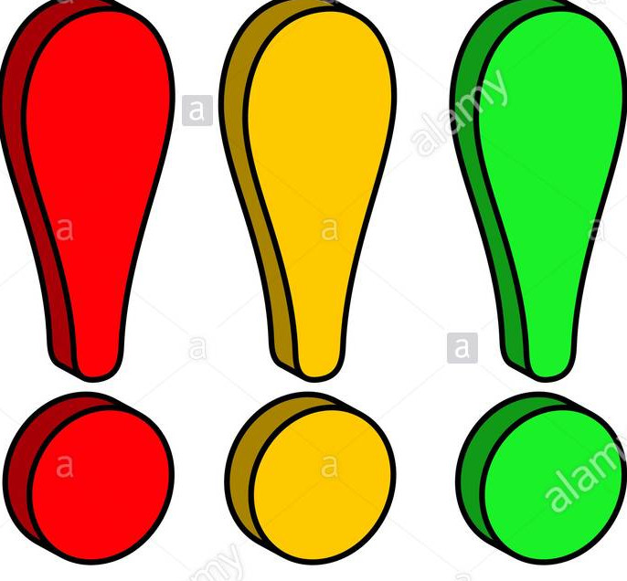

WELCOME TO THE HOME OF TRINBARJAM
Congratualation to the Peoples Democratic Revolution Party for once again winning the general elections for the second year in a row and for their second victory since competing.We would also like to congratulate the United Progressive Movement for their great work after falling short of victory as well as all the other political party.Additionally we would like to point that we went through the election without any causalities.We thank you all for making it a safe and enjoying election yet. We at Trinbarjam are looking forward to next year election and we hope it will be better than ever before.